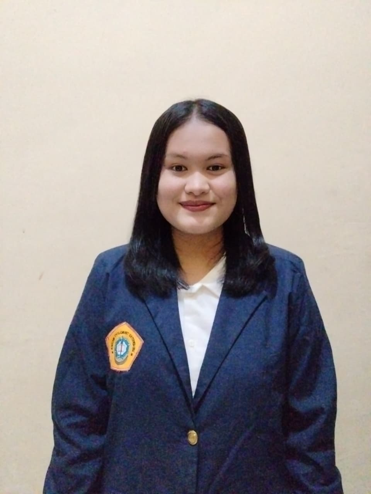

|
 |
Nama | Dini Mas Ayu Panjaitan |
| Nomor Telepon & Email | 087883089711/Dinipanjaitan017@gmail.com | |
| Alamat | Sumatera Utara, Kabupaten Toba | |
| Deskripsi Diri | Perkenalkan nama saya Dini mas Ayu panjaitan, Saya anak ke-9 dari 11 bersaudara, saya suka Menari dan dance saya menyukai dance mulai dari saya kelas 6 SD saya awal mulai suka dance karna saya fesn sama idola korea. Saya mahasiswa semester dua, di Universitas Trunodjoyo Madura prodi Sistem Informasi di Fakultas Teknik. |
| Nama Sekolah | Alamat Sekolah | Jurusan Sekolah | Prestasi di Sekolah | Tahun Sekolah |
| SMAN 1 Silaen | Toba, Sumatera Utara | IPA |
|
2022 |
| Universitas Trunodjoyo Madura | Madura | Sistem Informasi | Tidak Ada | 2025 |
| Nama Perusahaan | Deskripsi Perusahaan | Tahun Mulai | Daftar Jobdesk |
| Bank Mandiri | Bank Mandiri adalah Salah satu bank Terbesar di Swasta di indonesia Yang menyediakan berbagai Layanan Keuangan seperti Tabungan,Peminjaman Dan Kartu Kredit. |
2029-pensiun |
|
| Nama Organisasi | Deskripsi Organisasi | Divisi/Departemen/Sie | Tahun Mulai-Berakhir | Daftar Jobdesk |
| OSIS | OSIS adalah organisasi Sekolah yang membantu dalam pengembangan bakat dan minat para siswa-siswi yang menjadi wadah antara guru dan siswa, selain itu osis ini juga dapat menjadi latihan dalam berorganisasi |
Sekretaris Osis | 2023-2024 |
|